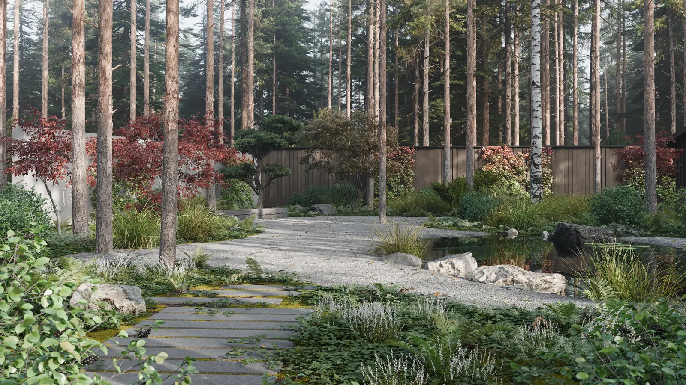
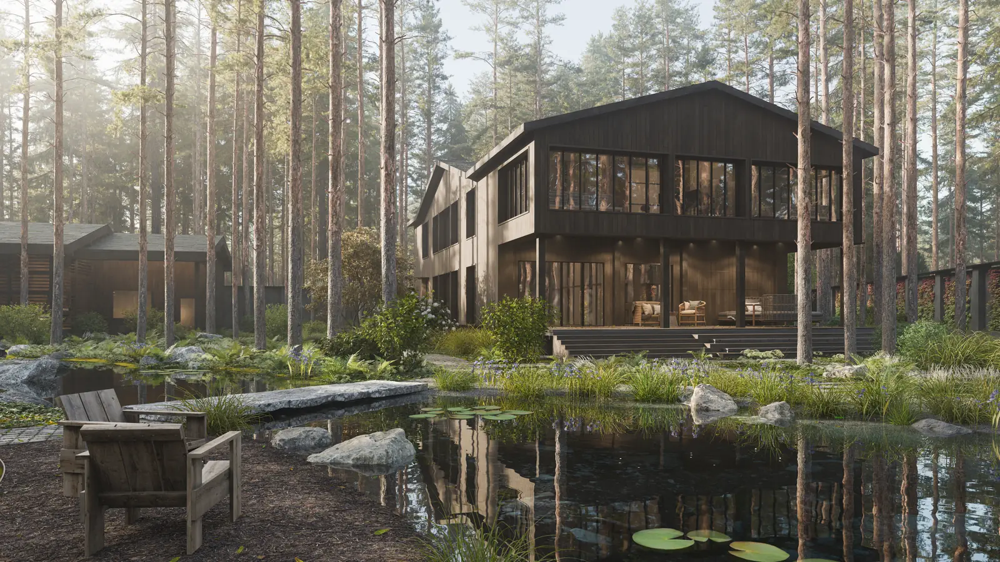
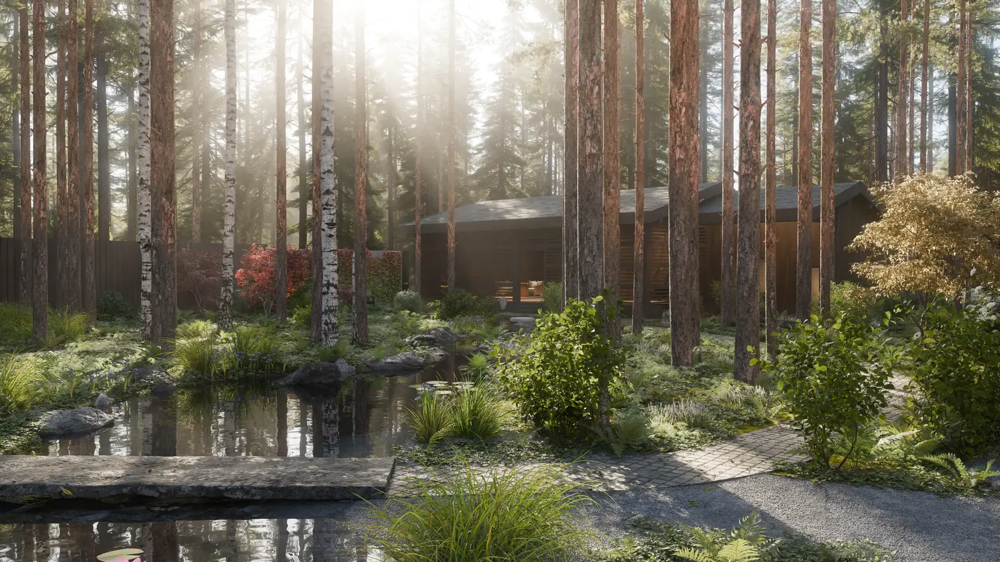
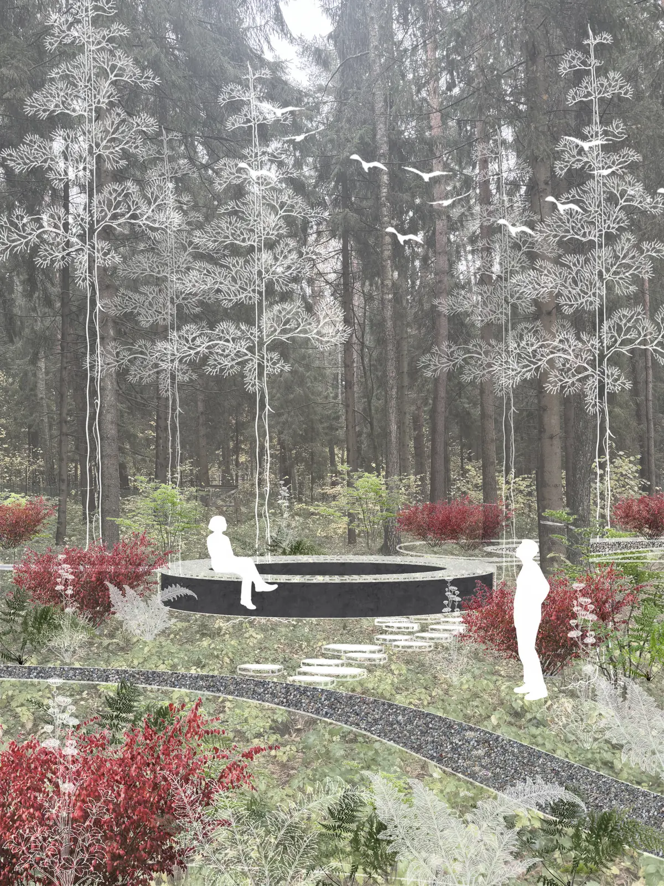
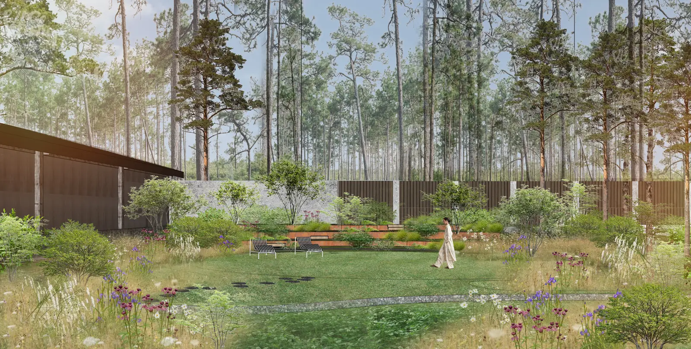
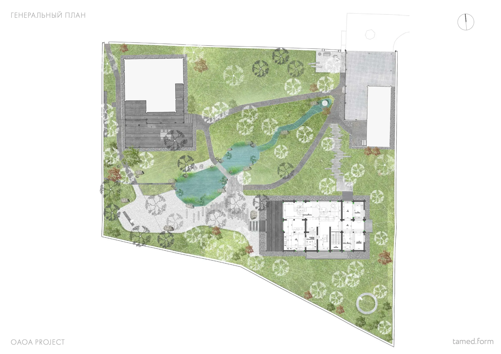
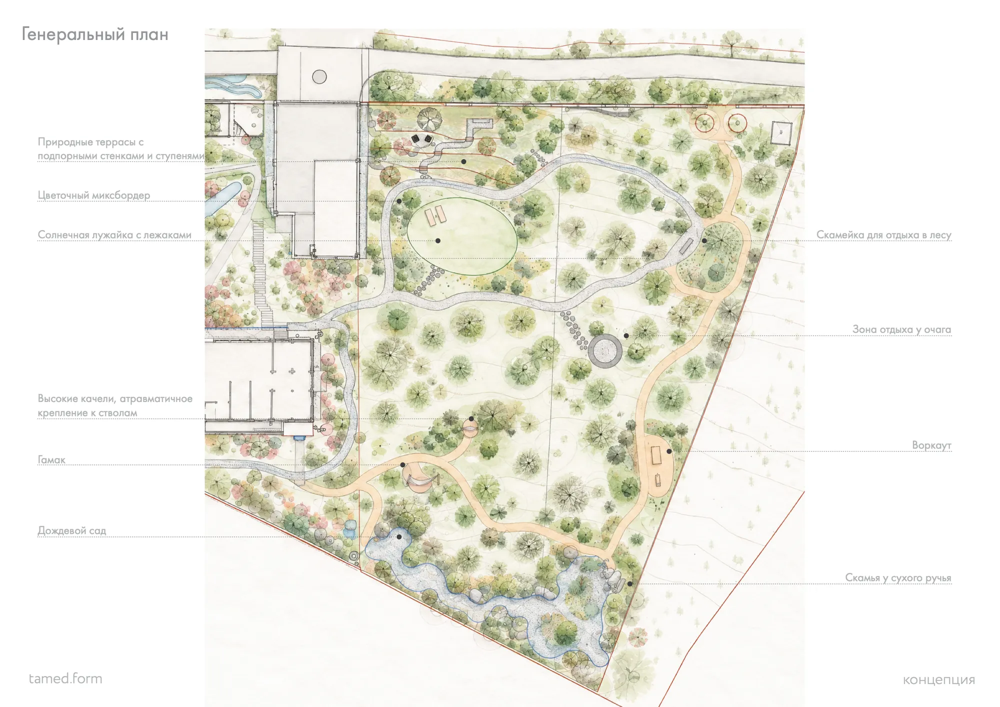
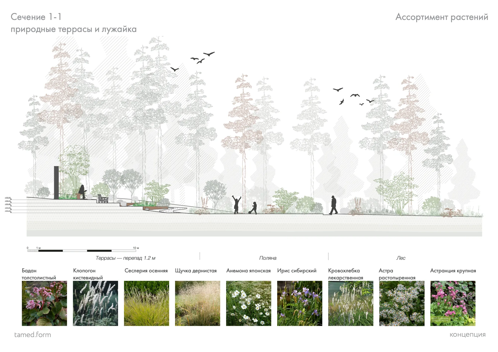

николина гора
Сад в сосновом лесу стародачного посёлка «РАНИС», где десятилетиями жили художники, учёные и писатели. Наша задача — вписать новую жизнь в этот ландшафт, не нарушив его покоя.
Вековые сосны — главные герои: нижний ярус подчёркивает их вертикаль, а массивы гортензии и спиреи дают «светящиеся» акценты в лесной тени. Пруд — сердце сада — продолжает линию террасы и создаёт место для тихой паузы.
На втором участке сад постепенно растворяется в лесу: террасы из кортена на существующем рельефе, открытая солнечная поляна и минимальное вмешательство за её пределами.




чертежи и схемы


